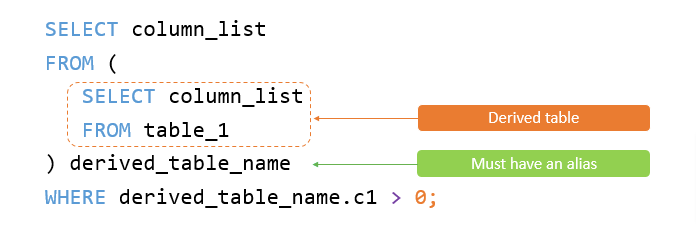

Querying data
- MySQL SELECT statement doesn’t require the FROM clause.
- When executing the SELECT statement, MySQL evaluates the FROM clause before the SELECT clause (if has)
SELECT CONCAT(“HI",”MySql")
- Assign an alias to a column to make it more readable. (here, as is optional)
Evaluation Order
- The evaluation order is so important because when we use aliases, sometimes it may not work if the relevant CLAUSE executes before the SELECT statement.
Sorting data
- By default, the ORDER BY clause uses ASC if you don’t explicitly specify any option
- The evaluation order FROM->SELECT->ORDER BY
- In MySQL, NULL is lower than non-NULL values
SELECT contactLastname, contactFirstname
FROM customers
ORDER BY contactLastname DESC , contactFirstname ASC;
- The ORDER BY clause sorts the result set by the last name in descending order first and then sorts the sorted result set by the first name in ascending order to make the final result set. (Guess here are multiple records with same lastName but with different firstName)
#The FIELD() function returns the position of the value in the list of values value1, value2, and so on
#FIELD(value, value1, value2, ...)
SELECT orderNumber,status FROM orders
ORDER BY FIELD(status, 'In Process', 'On Hold', 'Cancelled', 'Resolved', 'Disputed', 'Shipped');
Filtering data
- Note that MySQL treats 1 as true and 0 as false.
- MySQL evaluates the WHERE clause after the FROM clause and before the SELECT and ORDER BY clauses. FROM->WHERE->SELECT->ORDER_BY
- In the database world, NULL is a marker that indicates that a value is missing or unknown. NULL is not equivalent to the number 0 or an empty string. SO use IS NULL in where clauses instead of (=)
SELECT firstName, lastName FROM employees WHERE lastName LIKE '%son' ORDER BY firstName;
- Use the MySQL DISTINCT clause to remove duplicate rows from the result set returned by the SELECT clause.
- MySQL doesn’t have a built-in Boolean type. Instead, it uses the number zero as FALSE and non-zero values as TRUE.
- So,logical AND operator returns 1 or 0, and returns NULL if either operand is non-zero or both operands are NULL.
-
MySQL evaluates the OR operator after the AND operator if an
expression contains both AND and OR operators.
- Use parentheses to change the order of evaluation.
SELECT 1 OR 0 AND 0;
SELECT (1 OR 0) AND 0;
- Use the IN operator to check if a value is in a set of values.
#The value can be a column or an expression.
...value IN (value1, value2, value3,...)
SELECT 1 IN (1,2,3); #returns 1 because 1 is in the list
- Use the MySQL NOT IN to check if a value doesn’t match any value in a list.
wildcard characters (%, _)
- The percentage ( % ) wildcard matches any string of zero or more characters s% => sun, six | %on => Patterson,Thompson | %on% => Bondur,Bondur
- The underscore ( _ ) wildcard matches any single character. se_ => see, sea | T_m => tom, tim
- When the pattern contains the wildcard character and you want to treat it as a regular character, you can use the ESCAPE clause.
- To ensure the LIMIT clause returns an expected output, you should always use it with an ORDER BY clause
SELECT select_list
FROM table_name
ORDER BY sort_expression LIMIT offset, row_count;
#from row *offset *row_count num of rows will be returned, 1st row is 0
#alternative way -> LIMIT row_count OFFSET offset
- When you use the LIMIT clause with one argument, mysql use this to determine the maximum number of rows to return from the first row of the result set
...LIMIT row_count; === LIMIT 0 , row_count;
- The following finds the customer who has the second-highest credit (Note that this technique works when there are no two customers who have the same credit limits. To get a more accurate result, you should use the DENSE_RANK() window function.)
SELECT customerName, creditLimit FROM customers ORDER BY creditLimit DESC LIMIT 1,1;
Joining tables
- You cannot use a column alias in the WHERE clause. The reason is that when MySQL evaluates the WHERE clause, the values of columns specified in the SELECT clause have not been evaluated yet
- MySQL hasn’t supported the FULL OUTER JOIN yet.
- The left table is the table mentioned before the LEFT/RIGHT JOIN clause.The right table is the table mentioned after the LEFT/RIGHT JOIN clause.
- To find the committee members who are not in the members table, you use this query
SELECT m.member_id,m.name AS member,c.committee_id, c.name AS committee
FROM members m
RIGHT JOIN committees c USING(name)
WHERE m.member_id IS NULL;
-
These two are different, 2nd one returns all orders;
However, only the order
10123will have associated line items as shown in the query result
SELECT o.orderNumber, customerNumber, productCode FROM orders o LEFT JOIN orderDetails USING(orderNumber) WHERE orderNumber = 10123;
SELECT o.orderNumber, customerNumber, productCode FROM orders o LEFT JOIN orderDetails d ON o.orderNumber = d.orderNumber AND o.orderNumber = 10123;
- Notice that for INNER JOIN clause, the condition in the ON clause is equivalent to the condition in the WHERE clause.
- The RIGHT OUTER JOIN is the synonym of the RIGHT JOIN
- Use table aliases and inner join or left join to perform a self join in MySQL. //REFER MORE
Grouping data
Group By
- The GROUP BY clause groups rows into summary rows based on column values or expressions. It returns one row for each group and reduces the number of rows in the result set.
- Place the GROUP BY clause after the FROM and WHERE clauses
FROM->WHERE->GROUP_BY->HAVING->SELECT->DISTINCT->ORDER_BY->LIMIT
#To obtain the number of orders in each status
SELECT status, COUNT(*) FROM orders GROUP BY status;
- If you use the GROUP BY clause in the SELECT statement without using aggregate functions, the GROUP BY clause behaves like the DISTINCT clause.
Having
- The HAVING clause applies the condition to groups of rows, while the WHERE clause applies the condition to individual rows.
- If you omit the GROUP BY clause, the HAVING clause behaves like the WHERE clause FROM->WHERE->GROUP_BY->HAVING->SELECT->DISTINCT->ORDER_BY->LIMIT
- To filter the groups returned by GROUP BY clause, you use a HAVING clause.
...GROUP BY year HAVING year > 2003;
SELECT ordernumber, SUM(quantityOrdered) AS itemsCount, SUM(quantityOrdered*priceeach) AS total
FROM orderdetails
GROUP BY ordernumber HAVING total > 1000;
- Use the HAVING COUNT clause to filter groups by the number of items in each group.
Subqueries
- A query contain within another query like SELECT, INSERT, UPDATE, DELETE
- SubQuery evaluates first
SELECT lastName,
officeCode
FROM employees
WHERE officeCode IN
(SELECT officeCode
FROM offices
WHERE country = 'USA');
#this is similar to WHERE officeCode IN (1,2,3)
#Operand should contain 1 column(s)
#IN,NOT IN, comparison OPERATORS,EXISTS and NOT EXISTS
- When a subquery is used with the EXISTS or NOT EXISTS operator, a subquery returns a Boolean value of TRUE or FALSE.
- When you use a subquery in the FROM clause, the result set returned from a subquery is used as a temporary table. This table is referred to as a derived table or materialized subquery.
correlated subquery
- Subqueries are independent as they are standalone.
- A correlated subquery is a subquery that uses the data from the outer query. In other words, a correlated subquery depends on the outer query. A correlated subquery is evaluated once for each row in the outer query.
#1
SELECT productname,
buyprice
FROM products AS p1
WHERE buyprice >
(SELECT AVG(buyprice)
FROM products
WHERE productline = p1.productline)
#2
SELECT customerNumber,
customerName
FROM customers
WHERE EXISTS
(SELECT orderNumber,
SUM(priceEach * quantityOrdered)
FROM orderdetails
INNER JOIN orders
USING (orderNumber)
WHERE customerNumber = customers.customerNumber
GROUP BY orderNumber
HAVING SUM(priceEach * quantityOrdered) > 60000);
derived tables

SELECT
customerGroup,
COUNT(cg.customerGroup) AS groupCount
FROM
(SELECT
customerNumber,
ROUND(SUM(quantityOrdered * priceEach)) sales,
(CASE
WHEN SUM(quantityOrdered * priceEach) < 10000 THEN 'Silver'
WHEN SUM(quantityOrdered * priceEach) BETWEEN 10000 AND 100000 THEN 'Gold'
WHEN SUM(quantityOrdered * priceEach) > 100000 THEN 'Platinum'
END) customerGroup
FROM
orderdetails
INNER JOIN orders USING (orderNumber)
WHERE
YEAR(shippedDate) = 2003
GROUP BY customerNumber) cg
GROUP BY cg.customerGroup;
- For some scenarios, both the IN and EXISTS clauses can be used, but since the EXISTS operator works based on the at least found principle, it is much faster.
- However, the query that uses the IN operator will perform faster if the result set returned from the subquery is very small.
#1
SELECT * FROM customers c1
WHERE customerNumber IN
(SELECT customerNumber FROM orders );
#2
SELECT * FROM customers c1
WHERE EXISTS
(SELECT * FROM orders o WHERE c1.customerNumber = o.customerNumber );
Set operators
- To combine result set of two or more queries using the UNION operator.
- First, the number and the orders of columns that appear in all SELECT statements must be the same.
- Second, the data types of columns must be the same or compatible.
- By default, the UNION operator removes duplicate rows even if you don’t specify the DISTINCT operator explicitly. SELECT column_list UNION [DISTINCT | ALL]
- A JOIN combines result sets horizontally, a UNION appends result set vertically.
- Use the MySQL EXCEPT operator to retrieve rows from one result set that do not appear in another result set. And it follows the same rules like in UNION operator.
- Use the MySQL INTERSECT operator to find the rows that are common to multiple query results. And it follows the same rules like in UNION operator.
Managing databases
- Directly login MYSQL with a database name mysql -u root -D classicmodels -p
- Review the created database SHOW CREATE DATABASE testdb;
- Unlike MySQL, where schema and database are interchangeable, in standard SQL (and many RDBMS like PostgreSQL, SQL Server, or Oracle), they are distinct concepts.
- In standard SQL, CREATE DATABASE creates a new database, while CREATE SCHEMA organizes objects within an existing database.
Working with tables
- CREATE TABLE [IF NOT EXISTS] table_name(column1 datatype constraints,...) ENGINE=storage_engine;
- The SELECT LAST_INSERT_ID(); query returns the last auto-increment value generated for the ID column.
- MySQL does not have the built-in BOOLEAN or BOOL data type. To represent boolean values, MySQL uses the smallest integer type which is TINYINT(1).
- CHAR and BINARY are fixed length while VARCHAR and VARBINARY are variable length string data types.
#Insert data into a tbale from other tables
INSERT INTO credits(customerNumber, creditLimit)
SELECT customerNumber, creditLimit FROM customers WHERE creditLimit > 0;
ALTER Table/s
ALTER TABLE tbl ADD col1 column_definition [FIRST | AFTER column_name], col2 column_definition [FIRST | AFTER column_name]...
#Adding a new NOT NULL columns to an existing table will populated with default values
ALTER TABLE tbl MODIFY col1 column_definition [ FIRST | AFTER column_name], col1 column_definition [ FIRST | AFTER column_name]...;
ALTER TABLE tbl CHANGE COLUMN original_name new_name column_definition [FIRST | AFTER column_name];
ALTER TABLE table_name DROP COLUMN column_name;
#The COLUMN keyword in the DROP COLUMN clause is optional
#Before droping, need to check use cases of the column like FKs,SPs,Views,Triggers...
ALTER TABLE table_name RENAME TO new_table_name;
#Note:
RENAME TABLE table_name TO new_table_name;
DROP [TEMPORARY] TABLE [IF EXISTS] tbl1,tbl2...;
-
Note that you cannot use the RENAME TABLE statement to rename a temporary table, but you can use the ALTER TABLE statement to rename a temporary table.
-
Use DESCRIBE tabel_name; / DESC tabel_name; to get the list of columns in a table with their definitions.
-
Use CHECK TABLE tbl_name; to check the status of the table/view.
-
Use SHOW WARNINGS; to show the warning
-
Use SHOW CREATE TABLE tabel_name; to shows the definition of the table.
-
Use SHOW INDEX FROM tabel_name; to displays all indexes associated with the table.
-
In terms of security, any existing privileges that you granted to the old table must be manually migrated to the new table when using RENAME TABLE.
-
And you’ll need to manually adjust other database objects, including views, stored procedures, triggers, and foreign key constraints that reference the table.
Check is a column exist in a table
SELECT IF(count(*) = 1, 'Exist','Not Exist') AS result
FROM information_schema.columns
WHERE table_schema = 'classicmodels' AND table_name = 'vendors' AND column_name = 'phone';
- MySQL allows a table to have up to one auto-increment column and that column must be defined as a key.
- If we add new auto-increment id column to an existing table, it will add ids for existing rows as well.
- Note that the DROP TABLE statement only drops tables. It doesn’t remove specific user privileges associated with the tables. Therefore, if you create a table with the same name as the dropped one, MySQL will apply the existing privileges to the new table, which may pose a security risk.
- To execute the DROP TABLE statement, you must have DROP privileges for the table that you want to remove.
- If you want to drop multiple tables that have a specific pattern in a database, you can't use the LIKE operator; instead, you have to write a separate mechanism or use SPs.
Temporary tables
- MySQL removes the temporary table automatically when the session ends or the connection is terminated.
- A temporary table is only available and accessible to the client that creates it.
- In the same session, two temporary tables cannot share the same name.
- If you create a temporary table named employees in the sample database, the existing employees table becomes inaccessible.
- To create a temporary table whose structure is based on an existing table, you cannot use the CREATE TEMPORARY TABLE ... LIKE statement.
CREATE TEMPORARY TABLE temp_table_name
SELECT * FROM original_table LIMIT 0;
Truncateing a Table
TRUNCATE [TABLE] table_name; #The TABLE keyword is optional, but to distinguish TRUNCATE TABLE and TRUNCATE() use it.
- Truncating a table resets AUTO_INCREMENT values to zero.
- If there is any FOREIGN KEY constraints from other tables that reference the table that you truncate, the TRUNCATE TABLE statement will fail.
- It cannot be rolled back.
- TRUNCATE TABLE statement is more efficient than the DELETE statement because it drops and recreates the table instead of deleting rows one by one.
Generated Column
- Use a MySQL Generated column to store data computed from an expression or other columns.
CREATE TABLE contacts (
id INT AUTO_INCREMENT PRIMARY KEY,
first_name VARCHAR(50) NOT NULL,
last_name VARCHAR(50) NOT NULL,
fullname varchar(101) GENERATED ALWAYS AS (CONCAT(first_name,' ',last_name))
);
column_name data_type [GENERATED ALWAYS] AS (expression) [VIRTUAL | STORED] [UNIQUE [KEY]]
- MySQL provides two types of generated columns: stored and virtual. The virtual columns are calculated on the fly each time data is read whereas the stored columns are calculated and stored physically when the data is updated. default is VIRTUAL.
- The expression can contain literals, and built-in functions with no parameters, operators, or references to any column within the same table. If you use a function, it must be scalar and deterministic.
- If the generated column is stored, you can define a unique constraint for it.
MySQL constraints
Primary Key
- Primary Key can be defined as a column constraint or a table constraint. If the PK consist with multiple column it should be defined as a table constraint
- column1 datatype PRIMARY KEY, | column1 datatype,column2 datatype ..., PRIMARY KEY(column1, column2)
Foreign Key
[CONSTRAINT constraint_name] #constraint_name is optional
FOREIGN KEY [foreign_key_name] (column_name, ...) # foreign_key_name is optional
REFERENCES parent_table(colunm_name,...)
[ON DELETE reference_option]
[ON UPDATE reference_option]
- MySQL has five reference options: CASCADE, SET NULL, NO ACTION, RESTRICT, and SET DEFAULT.
CASCADE: if a row from the parent table is deleted or updated, the values of the matching rows in the child table are automatically deleted or updated. SET NULL: if a row from the parent table is deleted or updated, the values of the foreign key column (or columns) in the child table are set to NULL. RESTRICT: if a row from the parent table has a matching row in the child table, MySQL rejects deleting or updating rows in the parent table. NO ACTION: is the same as RESTRICT. SET DEFAULT: is recognized by the MySQL parser. However, this action is rejected by both InnoDB and NDB tables.
- MySQL fully supports three actions: RESTRICT, CASCADE and SET NULL. and If you don’t specify the ON DELETE and ON UPDATE clause, the default action is RESTRICT.
#Drop FK
ALTER TABLE table_name DROP FOREIGN KEY constraint_name;
#Disabling and Enabling FK. Important for csv imports kind of things and droping tables
#Or else you wll have to import parent table data first and then import child table data, this check each row in parent table and time consuming
SET foreign_key_checks = 0;
SET foreign_key_checks = 1;
UNIQUE Key
- In MySQL, NULL values are treated as distinct when it comes to unique constraints.
- When you define a unique constraint for a column or a group of columns, MySQL creates a corresponding UNIQUE index and uses this index to enforce the rule.
CREATE TABLE suppliers (
supplier_id INT AUTO_INCREMENT PRIMARY KEY,
name VARCHAR(255) NOT NULL,
phone VARCHAR(15) NOT NULL UNIQUE, #column constraint
address VARCHAR(255) NOT NULL,
CONSTRAINT uc_name_address UNIQUE (name,address) #table constraint, Here name is optional
);
#Drop UK
DROP INDEX index_name ON table_name;
ALTER TABLE table_name DROP INDEX index_name;
#Add UK
ALTER TABLE table_name ADD CONSTRAINT constraint_name UNIQUE (column_list);
NOT NULL
#Add not null
ALTER TABLE tasks
CHANGE end_date end_date DATE NOT NULL;
#Drop not null
ALTER TABLE tasks
MODIFY end_date DATE;
DEFAULT
#Adddefault
ALTER TABLE table_name
ALTER COLUMN column_name SET DEFAULT default_value;
#When inserting, you can pass DEFAULT or ignore passing value
INSERT INTO cart_items(name, quantity, price, sales_tax)
VALUES('Battery',4, 0.25 , DEFAULT);
#Drop default
ALTER TABLE table_name
ALTER column_name DROP DEFAULT;
CHECK
- Use CHECK constraints to ensure values stored in a column satisfy a Boolean condition.
CREATE TABLE parts (
part_no VARCHAR(18) PRIMARY KEY,
description VARCHAR(40),
cost DECIMAL(10,2 ) NOT NULL CONSTRAINT constraint_name CHECK (cost >= 0), #name is optional,this is a column constraint
price DECIMAL(10,2) NOT NULL CHECK (price >= 0), #column constraint
CONSTRAINT parts_chk_price_gt_cost CHECK(price >= cost) #table constraint
);
INSERT INTO parts(part_no, description,cost,price)
VALUES('A-001','Cooler',0,-100); //Fail
INSERT INTO parts(part_no, description,cost,price)
VALUES('A-001','Cooler',200,100); //Fail
#Add CHECK
ALTER TABLE table_name ADD CHECK (expression);
ALTER TABLE table_name ADD CONSTRAINT contraint_name CHECK (expression);
#Drop Check
ALTER TABLE table_name DROP CHECK constraint_name;
MySQL data types
- BIT, INT, BOOLEAN, DECIMAL, CHAR, VARCHAR, TEXT, DATETIME, TIMESTAMP, DATE, TIME, BINARY, VARBINARY, BLOB, ENUM, JSON, UUID?
Modifying data in MySQL
- When you insert multiple rows by a single statement and use the LAST_INSERT_ID() function to get the last inserted id of an AUTO_INCREMENT column, you will get the id of the first inserted row, not the id of the last inserted row. SELECT LAST_INSERT_ID();
INSERT INTO table_name(c1,c2,...)
VALUES(v1,v2,..),(v1,v2,..)...;
#Insert using a result of a query
INSERT INTO table_name(column_list)
SELECT select_list FROM another_table WHERE condition;
#This is also possible
INSERT INTO stats(totalProduct, totalCustomer, totalOrder)
VALUES(
(SELECT COUNT(*) FROM products),
(SELECT COUNT(*) FROM customers),
(SELECT COUNT(*) FROM orders)
);
-
Use the ON DUPLICATE KEY UPDATE option of the INSERT statement to insert data into a table and update existing data if a duplicate error occurs.
-
When you use the INSERT statement to add multiple rows to a table and if an error occurs during the processing, MySQL terminates the statement and returns an error. Consequently, the table remains unchanged with no inserted rows.
-
INSERT IGNORE INTO allows you to enter only valid rows and issue a WARNING instead of an ERROR for invalid rows.
INSERT IGNORE INTO subscribers(email)
VALUES('john.doe@gmail.com'),
('jane.smith@ibm.com');
- If you use this under STRICT MODE, MySQL will try to adjust them before ignoring... e.g., inserting a 7-digit value into a varchar(6) column will ignore the last digit and insert the first 6.
#Converting a datetime string into a DATETIME (YYYY-MM-DD HH:MM:SS) using STR_TO_DATE()
INSERT INTO events (event_name, event_time) VALUES ('MySQL Party', STR_TO_DATE('10/28/2023 20:00:00', '%m/%d/%Y %H:%i:%s'));
#Converting a date string into the DATE type (YYYY-MM-DD) format using STR_TO_DATE()
INSERT INTO events (event_name, event_date) VALUES ('MySQL Innovate', STR_TO_DATE('10/29/2023', '%m/%d/%Y'));
-
CURRENT_DATE gives the current date of the database server in 'YYYY-MM-DD' format.
-
UTC_DATE() gives the current date in UTC in 'YYYY-MM-DD' format.
-
In UPDATE statement WHERE clause is so important, it is optional, But if we foget it, mysql update all the rows.
-
LOW_PRIORITY and IGNORE statements are optional. IGNORE perform same as in INSERT statement.
-
Can be updated from rows returned by a SELECT statement.
#UPDATE to replace string
UPDATE employees
SET email = REPLACE(email,'@classicmodelcars.com','@mysqltutorial.org')
WHERE
jobTitle = 'Sales Rep' AND
officeCode = 6;
#Update by a result of a select
UPDATE customers
SET salesRepEmployeeNumber = (SELECT...FROM...WHERE...ORDER BY...LIMIT 1)
WHERE salesRepEmployeeNumber IS NULL;
- Use the MySQL UPDATE JOIN with the INNER JOIN or LEFT JOIN clauses to perform cross-table updates.
UPDATE T1
[INNER JOIN | LEFT JOIN] T2 ON T1.C1 = T2.C1
SET T1.C2 = T2.C2, T2.C3 = expr
WHERE condition;
#This
UPDATE T1
SET T1.c2 = T2.c2,T2.c3 = expr
WHERE T1.c1 = T2.c1 AND condition;
#Is equel to
UPDATE T1
INNER JOIN T2 ON T1.C1 = T2.C1
SET T1.C2 = T2.C2, T2.C3 = expr
WHERE condition;
UPDATE employees
INNER JOIN merits ON employees.performance = merits.performance
SET salary = salary + salary * percentage;
UPDATE employees
LEFT JOIN merits ON employees.performance = merits.performance
SET salary = salary + salary * COALESCE(percentage, 0.015);
- In DELETE statement, If you omit the WHERE clause, the DELETE statement will delete all rows in the table.
- To delete rows from both T1 and T2 tables that meet a specified condition, you use the following statement:
#if T! or T@ omit, this query delete records only in other table
DELETE T1, T2 FROM T1
INNER JOIN T2 ON T1.key = T2.key
WHERE condition;
#This clause delete rows from T1 table that does not have corresponding rows in the T2 table:
DELETE T1 FROM T1
LEFT JOIN T2 ON T1.key = T2.key
WHERE T2.key IS NULL;
Replace
- The MySQL REPLACE statement is an extension to the SQL Standard. The MySQL REPLACE statement works as follows: Step 1. Insert a new row into the table, if a duplicate key error occurs. Step 2. If the insertion fails due to a duplicate-key error occurs: Delete the conflicting row that causes the duplicate key error from the table. Insert the new row into the table again.
- To use the REPLACE statement, you need to have at least both INSERT and DELETE privileges for the table.
#Insert
REPLACE INTO cities(id,population) VALUES(2,3696820);
#Update
REPLACE INTO cities SET id = 4,name = 'Phoenix',population = 1768980;
#Select and update
REPLACE INTO cities(name,population)
SELECT name,population FROM cities WHERE id = 1;
- In INSERT, if no value spefified, it sets to NULL.
- Unlike the UPDATE statement, if column value not specified in the SET clause, the REPLACE statement will use the default value of that column.
Common Table Expressions
- Use MySQL CTEs to break down complex queries into simpler, more manageable queries. Each CTE represents a temporary result set that can be referenced within the main query.
#syntax
WITH cte_name (column_list) AS ( query )
SELECT * FROM cte_name;
#1
WITH customers_in_usa AS (
SELECT customerName, state FROM customers WHERE country = 'USA'
)
SELECT
customerName
FROM customers_in_usa WHERE state = 'CA' ORDER BY customerName;
#2
WITH topsales2003 AS (...query with complex joins)
SELECT column_list
FROM another_table JOIN topsales2003
#3 Using multiple CTEs
WITH salesrep AS (...query),
customer_salesrep AS (...query)
SELECT * FROM customer_salesrep ORDER BY customerName;
#4 Joining two CTEs example
WITH e AS (...query),
o AS (...query)
SELECT * FROM e INNER JOIN o USING (colum)
- Use MySQL recursive CTE to traverse hierarchical data.
Table Locking
LOCK TABLES table_name1 [READ | WRITE],
table_name2 [READ | WRITE],
... ;
#Unlock
UNLOCK TABLES;
#If the session is terminated, MySQL will release all the locks implicitly.
#Get connection ID of the current session
SELECT CONNECTION_ID();
#Show the processlist that are waiting for execute once a particular lock is released
SHOW PROCESSLIST;
- If a session locks a table as READ, the table can be read or data stored within that session. Other sessions can only read the table but will be in a waiting state for insert operations until the table is unlocked.
- If a session locks a table as WRITE, the table can be read or data stored within that session. Other sessions cannot read or write to the table and are placed in a waiting state until the table is unlocked.
MySQL globalization
- A character set is a collection of characters with a unique encoding. It defines the set of characters that can be used in a text column, such as letters, numbers, symbols, and special characters.
- Use the CONVERT() or CAST() function to convert between character sets.
SHOW CHARACTER SET; #To list all character sets in the current MySQL server
#Ex: utf8, utf8mb4, latin1, utf16
#Setting character sets for client connections
#1
SET NAMES 'utf8mb4';
#2 in configuration file (If the application supports the --default-character-set option)
[mysql]
default-character-set=utf8mb4
#3 Using the charset in connection strings ( connectors allow you to specify )
$dsn ="mysql:host=$host;dbname=$db;charset=utf8mb4";
- A MySQL collation is a set of rules used to compare characters in a particular character set.
- Each character set has a default collation. It can have more than one collation. However, two character sets cannot have the same collation.
- MySQL allows you to specify character sets and collations at four levels:
Server | Database | Table | Column
User-defined variables
- Use the MySQL user-defined variables in the SQL statements to pass data between statements within a session.
- @variable_name, case-insensitive and MySQL-specific extension to SQL standard
#variable assignment
SET @variable_name = value; OR
SET @variable_name := value; OR
SELECT value INTO @variable_name;
SELECT c1, c2, c3, ...
INTO @v1, @v2, @v3,...
FROM table_name WHERE condition;
- A user-defined variable can hold a single value. If the SELECT statement returns multiple values, MySQL will issue an error and the variable will take the value of the first row in the result set: (LIMIT 1; -- ensure maximum one row returned)
MySQL import & export CSV
- Use the LOAD DATA INFILE statement to import a CSV file into a table.
- Use the SELECT ... INTO OUTFILE statement to export a table to a CSV file on the MySQL Server.
Advanced techniques
Natural Sorting
- MySQL does not provide any built-in natural sorting syntax or function.
- So, 1,10Z,1C,2,20D,2A,3C like results will be returned from the MySQL order by statement even if we expect a result like 1,1C,2,2A,3C,10Z,20D
-
natural sorting follows these principles:
- Sort Numerical Values First.
- Then sort Text Values Second.
- Ignore letter cases and leading zeros.
- Finally, sort symbols and special Characters using their ASCII or Unicode values.
- Split data into parts and sort the parts to achieve natural sorting in MySQL. //REGEXP_SUBSTR(name, '^\d+') AS SIGNED
Comparing two tables
- Thus query returns no row if there are no unmatched records.
SELECT pk, c1
FROM
(
SELECT t1.pk, t1.c1
FROM t1
UNION ALL
SELECT t2.pk, t2.c1
FROM t2
) t
GROUP BY pk, c1
HAVING COUNT(*) = 1
ORDER BY pk
Find Duplicate Rows/Values
SELECT
first_name, COUNT(first_name),last_name, COUNT(last_name),email,COUNT(email)
FROM contacts
GROUP BY first_name , last_name , email
HAVING COUNT(first_name) > 1 AND COUNT(last_name) > 1 AND COUNT(email) > 1;
Delete Duplicate Rows
- using the DELETE JOIN statement - refer above
- using an intermediate table (create an intermediate table with same structure->insert distinct records->delete original table->rename intermediate table to the origianl tabel )
- using the ROW_NUMBER() function (from version 8.02)
Copy Table
#Copy only data
CREATE TABLE IF NOT EXISTS offices_bk
SELECT * FROM offices;
SELECT * FROM offices_bk;
#copy data and all database objects associated with the offices table
# indexes, primary key constraints, foreign key constraints, triggers, and so on
CREATE TABLE offices2 LIKE offices;
INSERT offices2
SELECT * FROM offices;
#Copying tables across databases
CREATE TABLE destination_db.new_table
LIKE source_db.existing_table;
INSERT destination_db.new_table
SELECT * FROM source_db.existing_table;
Interval
- INTERVAL expr unit
SELECT '2020-01-01' + INTERVAL -1 DAY; # 2019-12-31
SELECT DATE_ADD('2020-01-01', INTERVAL 1 MONTH) 1_MONTH_LATER,
DATE_SUB('2020-01-01',INTERVAL 1 MONTH) 1_MONTH_BEFORE; # 2020-02-01 | 2019-12-01
SELECT TIMESTAMPADD(MINUTE,30,'2020-01-01') 30_MINUTES_LATER; # | 2020-01-01 00:30:00
Commands
#Connect
mysql -u username -p # Connect to a Local MySQL server
mysql -u username -p db_name # Connect to Local MySQL server with database
mysql -h remote_host -u username -p # Connect to Remote MySQL Server
mysql -h remote_host -u username -p db_name # Connect to Remote MySQL Server with Database
mysql -h remote_host -P port -u username -p # Specify MySQL server port
mysql --login-path=mypath # Connect to a MySQL server using a login path
mysql -h remote_host -u username -p --ssl-ca=ca.pem --ssl-cert=client-cert.pem --ssl-key=client-key.pem # Connect to MySQL Server with SSL
#Exit
\q OR quit OR exit Alternatively Ctrl+D in Unix and Ctrl+Z in windows #Exit MySQL client
#Read
#If the number of columns is high, the output will not be readable. To fix it, you can
#display the query results in a vertical format using the \G instead of the semicolon (;):
SELECT firstName, lastName FROM employees ORDER BY firstName LIMIT 2\G
#Execute
mysql -u username -p -e "SELECT * FROM table_name;" db_name # Execute a command and exit
mysql -u username -p db_name < script.sql # Execute queries from a file, This can be used to import a dump db as well
#use the result of another command as an input for mysql using the | operator:
#works on Unix-like systems such as macOS and Ubuntu
cat query.sql | mysql -u root -p classicmodels
mysql -u username -p db_name -e "select * from tblName" > path/to/file # Write a query result to a file,
# This can be used for export a db as a dump file as well if the file is .sql
Ex) writes the data to the employee.txt file
mysql -u root -p classicmodels -e "select * from employees" > employees.txt